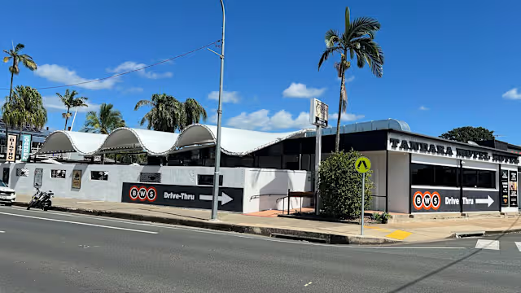

Zanimljivosti o prezimenu Tandara
Svako prezime krije svoju priču
Prezime nije samo riječ zapisana u matičnoj knjizi. Ono je dio obiteljskog identiteta, poveznica između prošlih i budućih naraštaja te trajni podsjetnik na naše pretke. Svaka generacija svojim životom ostavlja novi trag, a upravo zbog toga rodoslovlje nije samo popis imena i datuma, nego priča o ljudima, njihovim obiteljima, običajima, radu i zavičaju.
Rijetko i prepoznatljivo prezime
Prezime Tandara ubraja se među rijetka hrvatska prezimena. Upravo zbog njegove rijetkosti moguće je pratiti obiteljske grane kroz više stoljeća i povezivati ih s velikom sigurnošću. Za razliku od vrlo čestih prezimena, većina današnjih nositelja prezimena Tandara može svoje podrijetlo pratiti do zajedničkih predaka.
Prezime koje se lako pamti
Tandara se sastoji od tri jednostavna sloga – Tan – da – ra. Zbog svoje ritmičnosti i jednostavnog izgovora lako se pamti i ostavlja prepoznatljiv dojam.
Više od tri stoljeća obiteljske povijesti
Dosadašnja istraživanja pokazuju da se prezime Tandara u povijesnim izvorima pojavljuje već krajem 17. stoljeća. Unatoč ratovima, seobama i velikim društvenim promjenama, prezime se sačuvalo gotovo nepromijenjeno više od tristo godina. Takav kontinuitet svjedoči o dugoj i bogatoj povijesti obitelji.
Naziv Tandara u svijetu
Iako podrijetlo hrvatskog prezimena Tandara još nije sa sigurnošću razjašnjeno, zanimljivo je da se riječ Tandara ili njezini vrlo slični oblici pojavljuju u različitim dijelovima svijeta – kao prezime, osobno ime, naziv lokaliteta ili riječ s posebnim kulturnim značenjem.
Ta podudarnost ne znači nužno zajedničko podrijetlo. U većini slučajeva riječ je o nazivima koji su nastali neovisno jedni o drugima.
Tandara i Țândără – hrvatska i rumunjska inačica naziva
Prezime Tandara pojavljuje se kao autohtono u dvije europske države – Hrvatskoj i Rumunjskoj – i u obje se javlja dvostruko: kao prezime i kao naziv lokaliteta, zaseoka, predjela ili manjih ruralnih područja. Unatoč toj zanimljivoj podudarnosti, hrvatska i rumunjska inačica nemaju zajedničku povijest niti zajedničko podrijetlo. Prema dostupnim podacima, hrvatsko prezime Tandara datira od kraja 17. stoljeća, dok za rumunjsko prezime Țândără nema takvih podataka.
Hrvatski oblik: Tandara
Pisanje: Tandara
Izgovor: TÀN-da-ra, naglasak na prvom slogu
Fonetske značajke: tvrdo t, kratki vokali i ravnomjeran
ritam.
Povijesni kontekst: prezime se pojavljuje na dalmatinskom
i hercegovačkom području.
Etimologija: najčešće se povezuje s nazivom
tandir – limenom peći korištenom u vrijeme osmanske vladavine.
Prezime je moglo nastati po zanimanju izrade ili održavanja limenih peći,
po predmetu, odnosno tandiru kao prepoznatljivom objektu, ili po lokalitetu
gdje se takva peć koristila.
Rumunjski oblik: Țândără
Pisanje: Țândără
Izgovor: tsân-DĂ-rə, naglasak na drugom slogu
Fonetske značajke: početno slovo Ț izgovara se kao „ts”, a vokal ă neutralni je šva-zvuk.
Etimologija: rumunjski naziv potječe od riječi țândără u značenju treščica, iver ili komadić drveta. Prezime je najvjerojatnije nastalo po zanimanju vezanom uz drvodjelstvo, po osobini osobe koja radi s iverjem ili po lokalnom nazivu koji se odnosi na drvene ostatke.
Razlika u pisanju i izgovoru
- Pisanje: HR: Tandara / RO: Țândără
- Izgovor: HR: TÀN-da-ra / RO: tsân-DĂ-rə
- Naglasak: HR: početak / RO: sredina
- Podrijetlo: HR: tandir, limena peć / RO: treščica, iver, drvodjelstvo
Poslušajte izgovor oba oblika
Kliknite na zvučnik i poslušajte izgovor
Prezime Tandara u Slovačkoj
Prezime Tandara u Slovačkoj pojavljuje se ponajprije na području Žiline i Košica, gdje je zabilježeno u više suvremenih obitelji. Današnja prisutnost prezimena u tim krajevima najvjerojatnije je posljedica migracija stanovništva iz Transilvanije tijekom 18. i 19. stoljeća. Genealoške baze i raspored prezimena upućuju na to da Tandara nije autohtono slovačko prezime, nego je u Slovačku stiglo iz rumunjskog prostora, gdje postoji srodni oblik Țândără.
U Slovačkoj postoje i poznati suvremeni nositelji prezimena, što dodatno potvrđuje njegovu prisutnost:
- Lukáš Tandara — profesionalni lutkar, glumac i improvizator iz Žiline, Clowndoctors.
- Marián Tandara — nogometaš iz Žiline, igrao je za reprezentaciju U21 te nastupa kao desni branič u slovačkoj drugoj ligi.


Ovi primjeri pokazuju da se prezime Tandara u Slovačkoj održalo i razvilo u različitim područjima — od kazališta do sporta — ali ne mijenjaju osnovnu činjenicu: najvjerojatnije je riječ o prezimenu koje je u Slovačku stiglo iz rumunjskog područja, gdje postoji snažna jezična i povijesna podloga za njegov nastanak.
Ipak, iako je rumunjsko podrijetlo najvjerojatnije, ne može se potpuno isključiti mogućnost da je pojedini hrvatski nositelj prezimena Tandara tijekom 18. ili 19. stoljeća doselio na slovačko područje. Hrvatski oblik prezimena ima drukčiju etimologiju i povijesni razvoj, pa bi se takva mogućnost mogla jasno potvrditi ili isključiti jedino DNA analizom, usporedbom hrvatskih, slovačkih i rumunjskih genetskih linija.
Australija – podrijetlo i uporaba naziva Tandara
Podrijetlo naziva Tandara u Australiji
Naziv Tandara u Australiji smatra se nazivom aboridžinskog podrijetla, preuzetim iz lokalnih jezika starosjedilaca jugoistočne Australije. U različitim dijalektima riječ se tumači kao mjesto logora, mjesto boravka ili mjesto odmora, a u modernim interpretacijama i kao mirno mjesto odnosno mjesto tišine.
Takva uporaba predstavlja primjer načina na koji su europski doseljenici preuzimali aboridžinske riječi i pretvarali ih u nazive stočarskih posjeda, farmi, naselja i drugih lokaliteta.
Kako je nastao naziv Tandara u Victoriji
Prema ovom prikazu, naziv se u Victoriji pojavljuje tijekom 1840-ih godina, kada je europski doseljenik John Aitken veliki stočarski posjed (pastoralni run) nazvao Tandara, prema riječi koju je čuo od lokalnih Aboridžina.
- aboridžinska riječ,
- pastoralni posjed Tandara tijekom 1840-ih,
- naziv lokaliteta,
- naziv različitih objekata, ustanova i poslovnih subjekata.
Ovo australsko podrijetlo naziva nije povezano s hrvatskim prezimenom Tandara; riječ je o zasebnom nastanku i razvoju istog ili vrlo sličnog naziva.
Gdje se naziv Tandara danas koristi
1. Službeni lokalitet
Tandara, Victoria naziv je ruralnog lokaliteta u području Shire of Loddon.
2. Povijesni stočarski posjed
Naziv Tandara Station pojavljuje se u povijesnim zapisima vezanim uz stočarske posjede iz 19. stoljeća.
3. Farme, vinogradi, turistički i drugi objekti
Naziv Tandara koristi se i za različite farme, vinograde, ruralne smještaje, zdravstvene i zajedničke centre te projekte povezane s prirodom i ruralnim okruženjem.
4. Simboličko značenje
U modernoj uporabi naziv se često povezuje s mirom, prirodom, vodom, harmonijom i ruralnim ambijentom.
Primjeri uporabe naziva Tandara u Australiji




Sažetak: naziv Tandara u australskom kontekstu tumači se kao naziv aboridžinskog podrijetla povezan s mjestom boravka, odmora ili mira. Tijekom 19. stoljeća preuzet je kao naziv stočarskog posjeda, a poslije se proširio na lokalitet i različite ruralne, turističke, zdravstvene i poslovne objekte. To je podrijetlo neovisno o hrvatskom prezimenu Tandara.
Brazil – žensko osobno ime
U Brazilu se Tandara koristi kao žensko osobno ime, a njegovu međunarodnu prepoznatljivost dodatno je povećala poznata brazilska odbojkašica Tandara Caixeta. Iako ne postoji jedno službeno objašnjenje zbog čega je upravo ovo ime postalo popularno, njegova fonetska i estetska obilježja vrlo su vjerojatno pridonijela njegovoj privlačnosti.


Naziv Tandara ostavlja dojam imena koje je istodobno melodično, ritmično, zvučno i lako pamtljivo. Sastoji se od tri jasno odvojena sloga – Tan – da – ra – koji stvaraju prirodan ritam i skladnu harmoniju pri izgovoru. Upravo takva slogovna struktura omogućuje jednostavan i ugodan izgovor na mnogim svjetskim jezicima.
Posebnu privlačnost daje i njegova fonetska ravnoteža. Početni glas T ostavlja dojam odlučnosti i jasnoće, srednji slog da unosi dinamiku i osjećaj pokreta, dok završetak ra daje toplinu, otvorenost i ugodan završni zvuk. Cijelo ime zvuči energično, ali istodobno skladno, elegantno i lako pamtljivo.
Naziv Tandara posjeduje niz osobina koje se često smatraju poželjnima kod osobnih imena:
- melodičnost i prirodan ritam
- iznimnu zvučnost i lakoću izgovora
- harmoničnu slogovnu strukturu
- dinamičnost i osjećaj pokreta
- jednostavno pamćenje
- prepoznatljivost među drugim imenima
- međunarodnu izgovorljivost
- originalnost i rijetkost
- moderan, ali bezvremenski karakter
- fonetsku ravnotežu i sklad
- topao i ugodan završni zvuk
- eleganciju bez složenosti
- pozitivan prvi dojam pri izgovoru
- jednostavnost zapisivanja na različitim jezicima
- univerzalnost u različitim kulturama.
Zbog tih osobina naziv Tandara lako privlači pozornost i ostavlja pozitivan dojam već pri prvom susretu. Upravo zato nije neobično da se u različitim dijelovima svijeta pojavljuje kao osobno ime, prezime ili naziv mjesta. Njegova zvučna skladnost nadilazi jezične granice te ga čini jednako privlačnim govornicima različitih jezika i kultura.
Iako se razlozi odabira osobnog imena razlikuju od obitelji do obitelji, lingvistički gledano naziv Tandara pripada skupini imena koja zbog melodičnosti, ritmičnosti, zvučnosti, harmonije, jednostavnog izgovora, prepoznatljivosti i originalnosti ostavljaju snažan estetski dojam. Upravo te osobine mogu objasniti zašto se ime Tandara doživljava privlačnim i zašto je pronašlo svoje mjesto u različitim kulturama diljem svijeta.
Još uvijek istražujemo
Unatoč brojnim prikupljenim dokumentima, obiteljska povijest nikada nije potpuno završena. Svaka nova matična knjiga, stara fotografija, pismo ili obiteljska priča može donijeti novi podatak i upotpuniti mozaik prošlosti. Upravo je zato Digitalni arhiv roda Tandara zamišljen kao trajni projekt koji će se nadopunjavati novim spoznajama.
Jeste li i vi Tandara?
Nosite prezime Tandara ili među svojim precima imate članove roda Tandara? Pozivam vas da mi se javite. Možda upravo vaše obiteljske fotografije, dokumenti ili sjećanja mogu pomoći u proširenju i dopuni zajedničke povijesti roda Tandara.
Svaki podatak, bez obzira na to koliko se na prvi pogled činio malenim, može biti vrijedan dio zajedničke obiteljske baštine koju zajedno čuvamo za buduće naraštaje.
Dobro došli u Digitalni arhiv roda Tandara.